📈 生物圈震撼：00后小哥在客厅完成基因组测序，27亿美金壁垒塌了！
Living-room genome sequencing: DIY Nanopore, Evo2, AlphaGenome, and the falling $2.7B barrier
一台U盘大小的测序仪、几个AI模型——00后小哥Seth Howes，就这样在自家客厅里完成accomplish[əˈkɑmplɪʃ] v. 完成；实现；达到了基因组测序，独自破解了家族几十年未解的自身免疫疾病之谜。在2003年，完成attain[əˈteɪn] v. 完成；获得；达到一次人类全基因组测序的成本是27亿美元，而他只花了1100美元。


就在今天，全网都被这位00后小哥的故事narrative[ˈnɛrətɪv] n. 叙述；故事；讲述刷屏了！
这位名叫Seth Howes的网友，利用便携式测序仪和Claude，在自家客厅就独立完成了完整的integral[ˈɪnəgrəl] adj. 积分的；完整的，整体的；构成整体所必须的基因组测序，而且成功追溯到家族多代自身免疫疾病的致病机制。
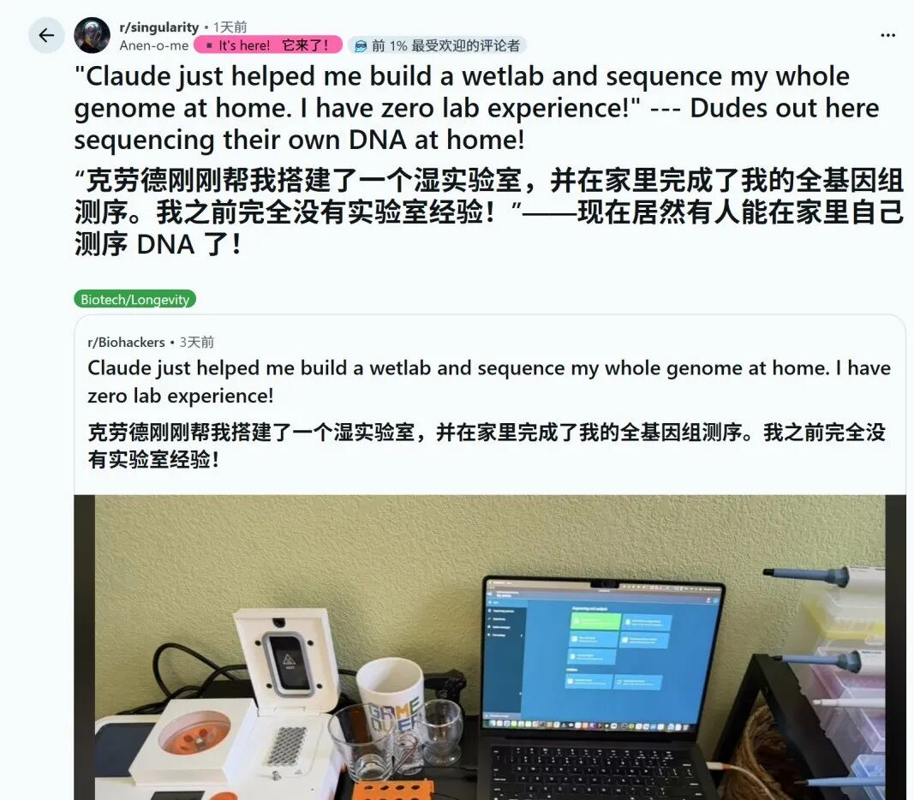
这些问题，曾经令无数临床clinic[ˈklɪnɪk] n. 临床；诊所医生束手无策。
这些机制，此前没有任何一位临床医生能给出解释define[dɪˈfaɪn] v. 确定，说明，界定；给…下定义，解释。看了十几年的病，换了无数家医院ambulance[ˈæmbjələns] n. [车辆][医] 救护车；战时流动医院，答案最后是在自己客厅里找到的。
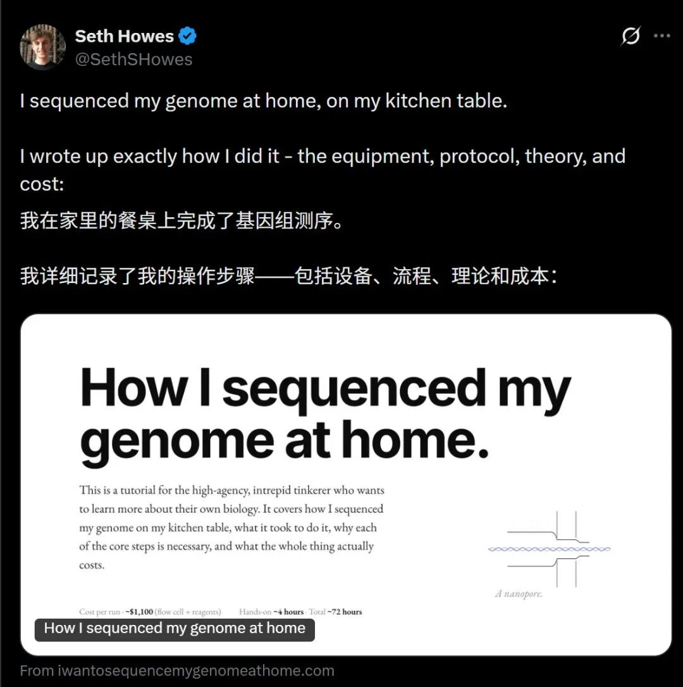
这个实验太震撼，生物breed[brid] n. [生物] 品种；种类，类型技术圈现在已经炸锅了！
Claude大模型，居然让基因测序从资本密集型活动变成个人工具gear[gɪr] n. 齿轮；装置，工具；传动装置。
生物学biology[baɪˈɑləʤi] n. 生物学研究的地点不再是哪家顶级实验室的昂贵机台，也不是什么医学院的公共平台，而是自家客厅！
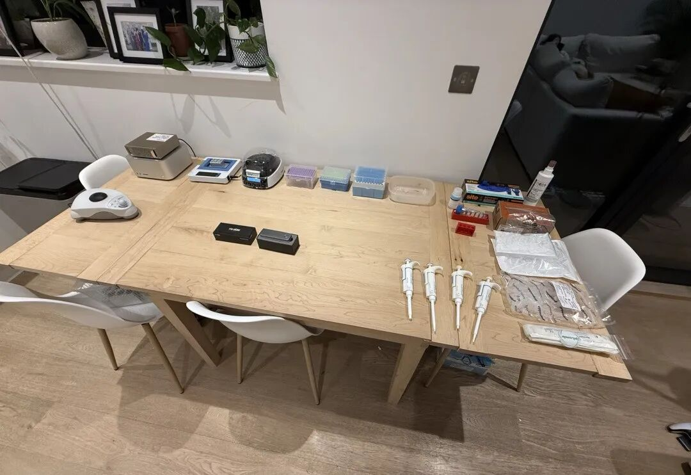
桌子上的实验室lab[læb] n. 实验室，研究室，包括加热模块、涡旋振荡器、迷你离心机、移液器、MinION
现在presently[ˈprɛzəntli] adv. 一会儿,不久；现在,目前，这个帖子已经全网刷屏了。
在实验室做了十年实验的experimental[ɪkˌspɛrɪˈmɛntəl] adj. 实验的；根据实验的；试验性的人都感慨：你真是太专业了。
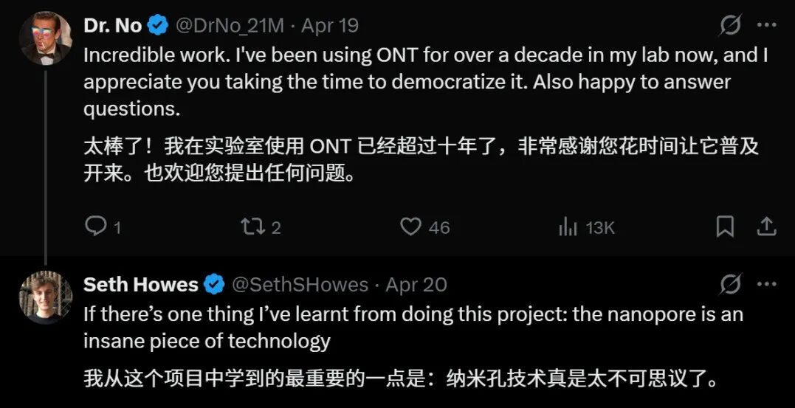
做遗传学genetic[ʤəˈnɛtɪk] n. [-s]遗传学研究的人都说，这个基因组测序项目正符合自己的研究范畴。
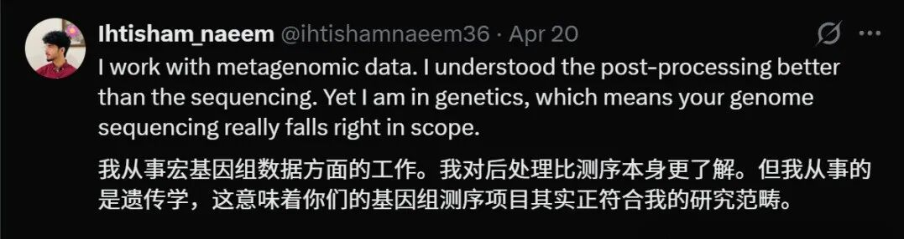
一位患有肿瘤的患者表示bid[bɪd] v. 投标；出价；表示；吩咐，这个实验实在是意义重大。
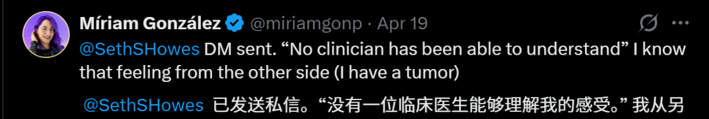
可以说，这是一个足以震撼整个altogether[ˌɔltəˈgɛðər] n. 整个；裸体生物圈的DIY实践：从此，生物学研究打破了机构垄断，彻底进入个人时代！

Seth Howes是一名exolabs的前工程师，并且是牛津的医学博士，和帝国理工的机器machinery[məˈʃinəri] n. 机械；机器；机构；机械装置学习博士。
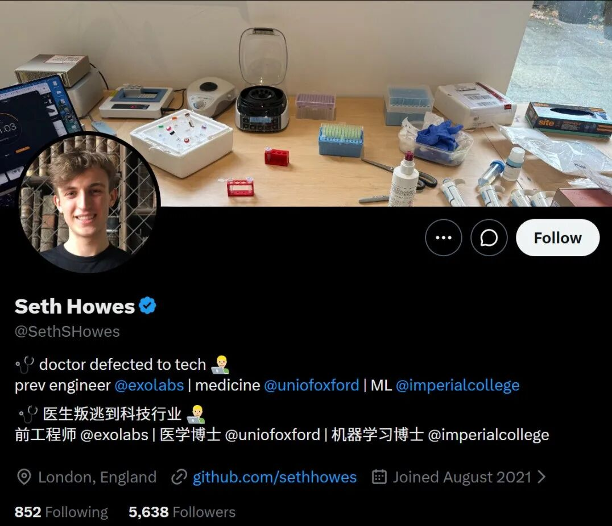
Seth的研究并非起于学术兴趣，而是源于derive[dəraɪv] v. 源于；得自；获得一份沉重的家族遗传压力。
他的家族长期面临高风险的自身免疫性疾病complaint[kəmˈpleɪnt] n. 抱怨；诉苦；疾病；委屈。
就在他进行实验experiment[ɪkˈspɛrəmənt] v. 尝试；进行实验期间，他不到40岁的姐姐因病导致肝脏严重受损，在等待两年后才艰难获得肝源进行手术。
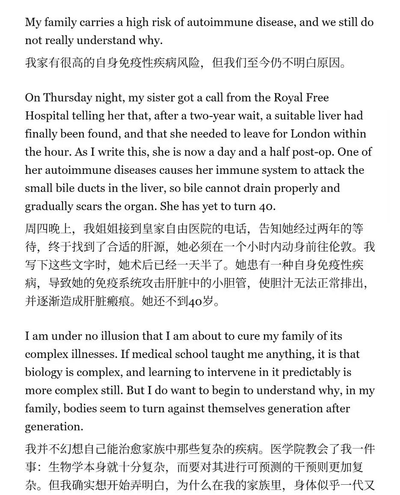
「我并不幻想能治愈cure[kjʊr] v. (of)治愈,医治家族的顽疾，但我确实想弄明白，为什么我们的身体会一代又一代地反噬自身？」
正是这种对生命底层代码的好奇心，再加上对数据隐私的追求，促使他决定在客厅搭建起一个「数字药剂师」的工作台bench[bɛnʧ] n. 长凳；工作台；替补队员。
毕竟，在他看来，「你最私密的数据不应该离开depart[dɪˈpɑrt] v. 离开,起程你的房子」。
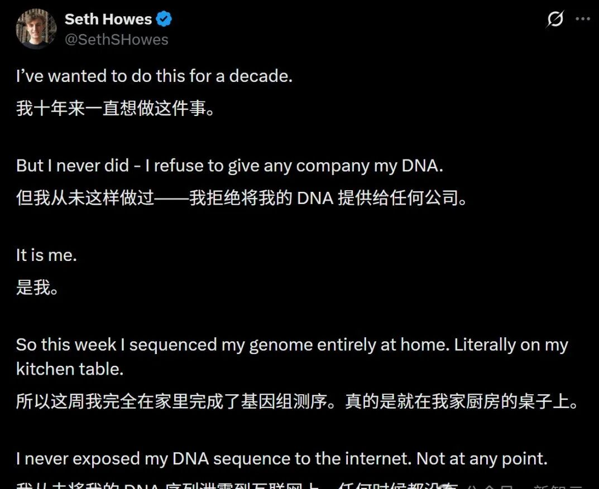

过去，全基因组测序是大型实验室laboratory[ləˈbɒrətri] n. 实验室， 研究室的专利，动辄耗资数十万美元。
而这次Seth的成功，关键在于consist[kənˈsɪst] v. (in)在于；(of)由…组成,由…构成三个要素的加持。
一、硬件：口袋里的「基因gene[ʤin] n. 基因读取器」
首先foremost[ˈfɔrˌmoʊst] adv. 首先；居于首位地，在硬件上，他使用的是 Oxford Nanopore MinION 测序仪。
这东西clay[kleɪ] n. [土壤] 粘土；泥土；肉体；似黏土的东西只有U盘大小，插在电脑上就能读取DNA序列。
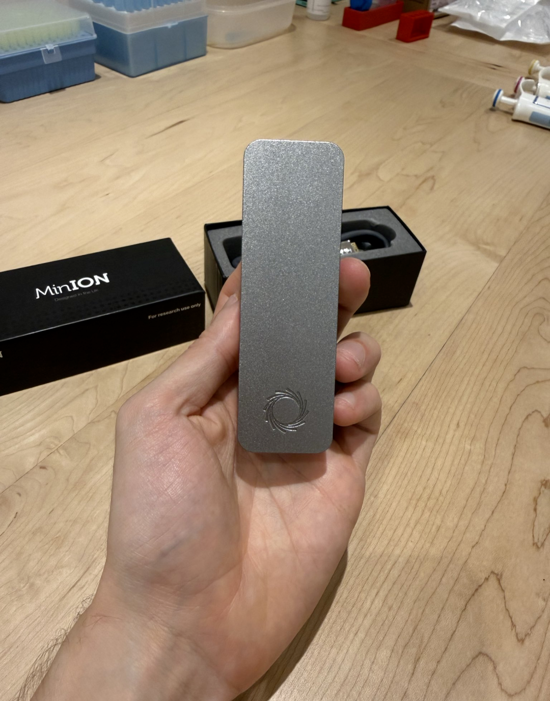
几年前，同样的事情sensation[sɛnˈseɪʃən] n. 感觉,知觉；激动,轰动,轰动一时的事情需要一台占满整个房间的Illumina测序仪，配上一支专业团队和一笔六位数的预算。
而现在，这个只有充电宝大小的设备，内部布满了约2000个纳米孔（直径仅1纳米），当DNA片段穿过这些孔洞时，引起arouse[əraʊz] v. 引起；唤醒；鼓励的微电流变化会被记录下来并转化为遗传代码。
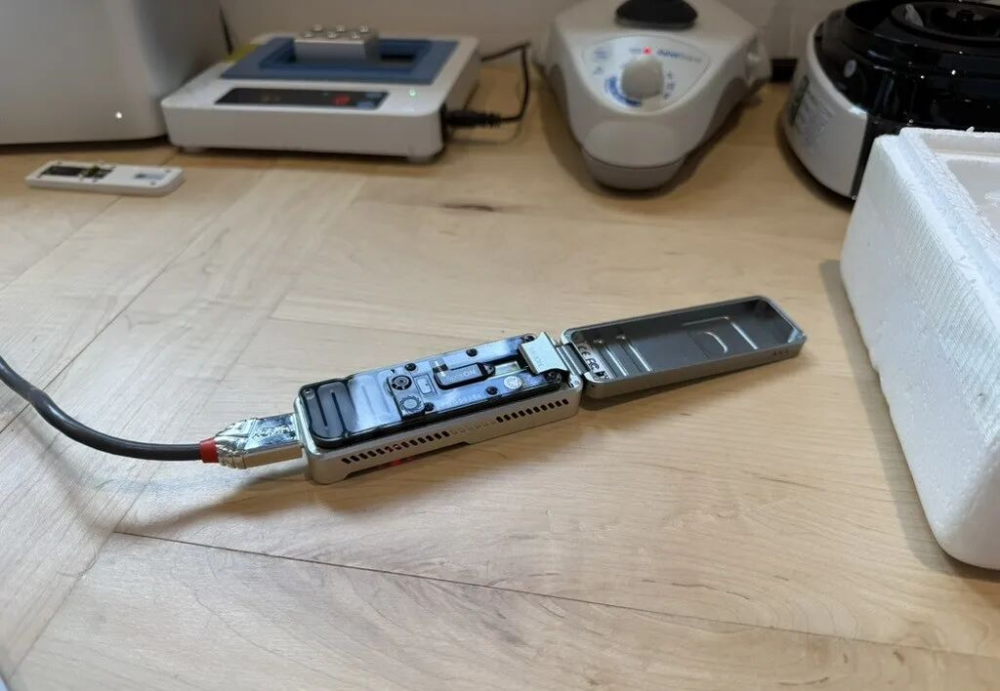
它将测序成本costing[ˈkɒstɪŋ] n. 成本从数十万美元降到了1000美元级别，未来甚至可能降至100美元。
可以说，MinION把「读取DNA」这件事，从一个资本密集型行为behaviour[bɪˈheɪvjər] n. 行为， 举止；特性； 运转情况变成了一个工具型能力。
就像3D打印机把「制造」fabricate[ˈfæbrəˌkeɪt] v. 制造；伪造；装配从工厂搬到了桌面，MinION把「测序」从实验室搬到了客厅。
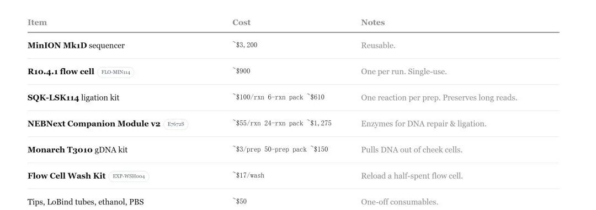
二、AI模型：从「读代码」到「理解absorb[əbˈzɔrb] v. 吸收；吸引；承受；理解；使…全神贯注功能」
但是nonetheless[ˌnənðəˈlɛs] adv. 尽管如此，但是在实验中，光读出A、T、C、G四个碱基是不够的。
30亿个碱基对的原始数据摆在面前，如果不知道它们意味着spell[spɛl] v. 拼，拼写；意味着；招致；拼成；迷住；轮值什么，就只是一堆字母。
这就是AI登场的地方。在实验中，用到了两个关键hinge[hɪnʤ] n. 铰链，折叶；关键，转折点；枢要，中枢模型。
第一个是Evo2。这是Arc Institute开发的基因组基础模型，参数规模达到70亿，在全球超过12万个物种的基因组数据上训练discipline[ˈdɪsəplən] v. 训练，训导；惩戒。它能做的事情affair[əˈfɛr] n. 事情；事务；私事；（尤指关系不长久的）风流韵事是：给一段DNA序列，预测这段序列在生物学上的功能。
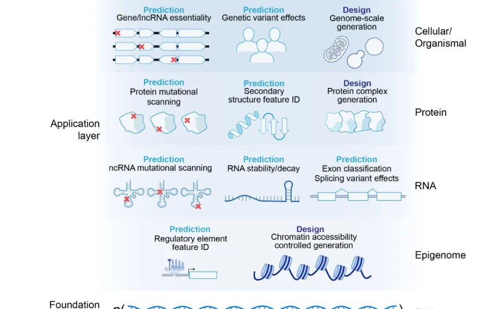
你肯定affirm[əˈfərm] v. 肯定；断言反应过来了——这就是一个生物学版的GPT！
GPT读懂人类humanity[juˈmænɪti] n. 人类；人性,人情；(pl.)人文科学语言，Evo2读懂生命语言。区别differentiate[ˌdɪfərˈɛnʧiˌeɪt] v. 区分，区别是，Evo2读的那本书有30亿个字母长。
第二个是AlphaGenome。
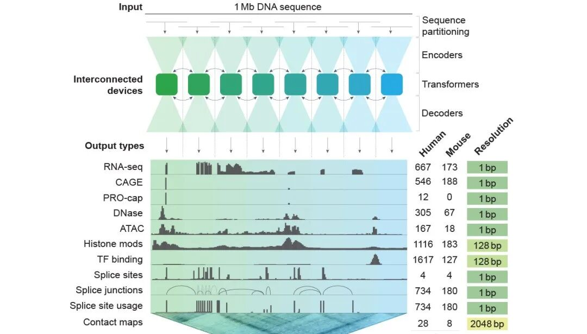
Google DeepMind出品，专门做基因组功能预测calculate[ˈkælkjəˌleɪt] v. 计算,推算；预测，估计。它不只是告诉你「这段DNA编码了什么蛋白质」，而是能预测「这个位点的突变会对基因表达和染色质结构产生什么影响consequence[ˈkɑnsəkwəns] n. 结果,后果,影响」。
从「读DNA」到「理解DNA功能」，这个跨越，过去需要一整个分子生物transition[trænˈzɪʃən] n. 过渡；转变；[分子生物] 转换；变调学实验室花几个月去验证。现在，一个模型跑几个小时就出结果consequently[ˈkɑnsəkˌwɛntli] adv. 结果，因此，所以。
三、接口简化simplify[ˈsɪmpləˌfaɪ] v. 简化,使单纯：大模型成了「实验室助理」
说到这儿，整件事里最让人意外的accidental[ˌæksəˈdɛnəl] adj. 偶然的；意外的；无意中的细节不是测序仪，也不是基因组模型，而是Claude。
Seth在操作maneuver[məˈnuvər] n. (manoeuvre)移动;运用,操作过程中，用Claude生成了BED文件。
BED文件是基因组学的标准数据格式，记录chalk[ʧɔk] v. 用粉笔写；用白垩粉擦；记录；规划基因组上特定区域的坐标信息。以前写这种文件需要懂生物creature[ˈkriʧər] n. 动物;生物信息学的专业人员手动编写，或者用专门的命令行工具。
现在的做法是：用自然语言告诉Claude「帮我生成一个BED文件，覆盖blanket[ˈblæŋkɪt] v. 覆盖，掩盖；用毯覆盖这几个基因区域」，它就生成了。
生物isolate[ˈaɪsəˌleɪt] n. [生物] 隔离种群学操作，已经被语言接口接管。
现在，硬件平民化（MinION）、AI理解力指数级提升（Evo2 + AlphaGenome）、操作门槛被语言接口抹平（Claude），直接构成了一个完整的范式转移avert[əˈvərt] v. 防止，避免；转移(目光、注意力等)链条。
每一环单独拿出来都不nowhere[ˈnoʊˌwɛr] adv. 任何地方都不， 没有地方算新闻。但三环同时meantime[ˈminˌtaɪm] adv. 同时；其间闭合，就出事了！
一个有好奇心curiosity[ˌkjʊriˈɑsəti] n. 好奇心；古董,古玩的年轻人，在自家客厅解开了临床医生十几年都解不开的谜。
这件事的冲击力，不在于Seth个人的subjective[səˈbʤɛktɪv] adj. 主观(上)的，个人的故事有多传奇，而在于它揭示了一条正在加速的曲线。
测序成本的下降decline[dɪˈklaɪn] n. 下降；衰退；斜面轨迹，比摩尔定律还狠。
2003年，完成execute[ˈeksɪkjuːt] v. 处死；实行;实施;执行;履行；完成一次人类全基因组测序的成本是27亿美元。2007年降到1000万。2014年降到1000美元。2024年，部分highlight[ˈhaɪˌlaɪt] n. 最精彩的部分平台已经能做到200美元以下。
下一个目标objective[əˈbʤɛktɪv] n. 目标,目的，是100美元。
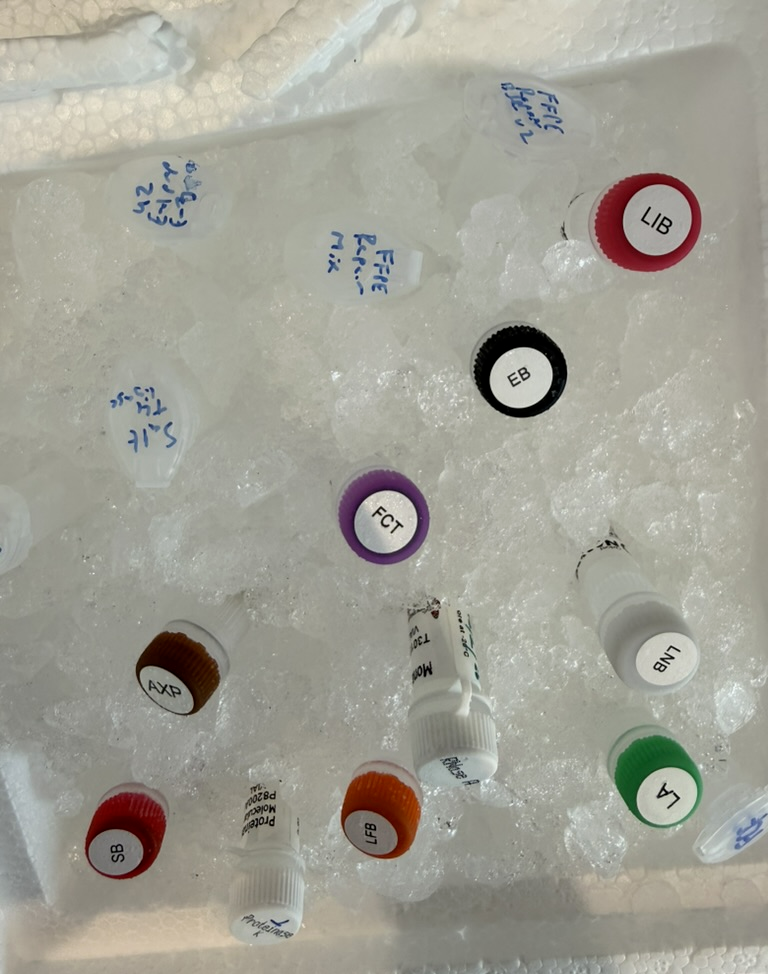
这条曲线的斜率意味着spelling[ˈspɛlɪŋ] v. 拼写；意味着（spell的ing形式）；迷住，在不远的将来，测序你自己的基因组，成本可能比做一次全身体检还低。
很多lump[ləmp] n. 块，块状；肿块；瘤；很多；笨人人第一反应是：这不就是个极客的hobby project吗？普通ordinary[ˈɔrdəˌnɛri] n. 普通；平常的人（或事）人谁会在家测基因组？
但回想recall[ˈriˌkɔl] v. 回忆,回想；撤消,收回一下，2010年的时候，有多少人觉得「普通人会在家里用3D打印机」？
每一次工具链闭合之后，从极客玩具到大众应用的窗口期都在缩短clip[klɪp] v. 剪；剪掉；缩短；给…剪毛（或发）用别针别在某物上，用夹子夹在某物上。这一次的窗口期可能更短，因为背后的驱动activate[ˈæktəˌveɪt] v. 启动，激活；驱动，驱使；使开始起作用力是刚需。
Seth公布advertise[ˈædvərˌtaɪz] v. 为...做广告；公告，公布的完整操作规程显示，他的实验室设备除了精密移液器外，很多都来自eBay二手或速卖通。
在样本提取阶段，他没有采取复杂的complicated[ˈkɑmpləˌkeɪtəd] adj. 难懂的，复杂的抽血，而是用无菌口腔拭子摩擦脸颊内侧，仅用 1根拭子就获得了约5-7微克 DNA，远超实验所需的1微克。
自适应adapt[əˈdæpt] v. 使适应；改编采样，就是MinION的杀手锏。
Seth通过approve[əˈpruv] v. 批准，通过；(of)赞成，赞许，同意软件控制，让测序仪在读取每个片段的前500个碱基时进行「初筛」：如果是他关心的免疫相关基因，就继续读；如果不是，就反转电压tension[ˈtɛnʃən] n. 张力，拉力；紧张，不安；电压把DNA链「吐出来」，换下一条。
运行开始几分钟后，MinKNOW 控制面板上的纳米孔活性状态asleep[əsˈlip] adv. 熟睡地；进入睡眠状态
这个过程中，他使用了M3 Ultra芯片的Mac Studio进行实时碱基识别，并利用英伟达的DGX Spark提升分析analyze[ˈænəˌlaɪz] vt. 分析； 分解速度，保证了算力。
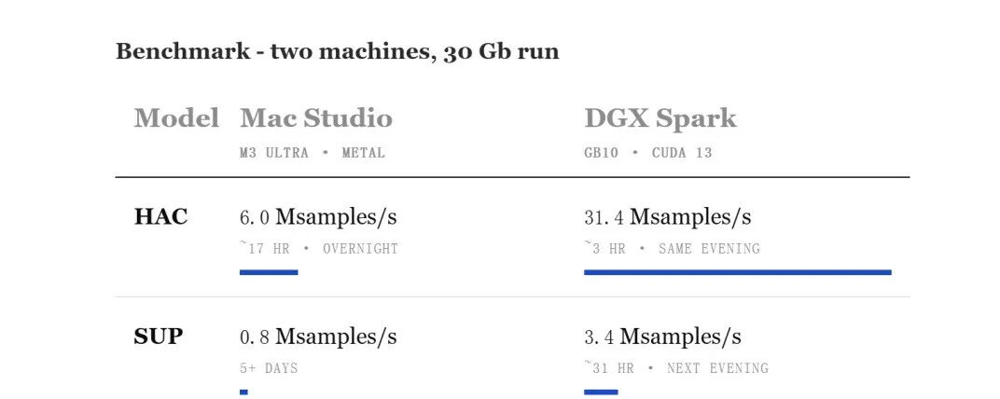
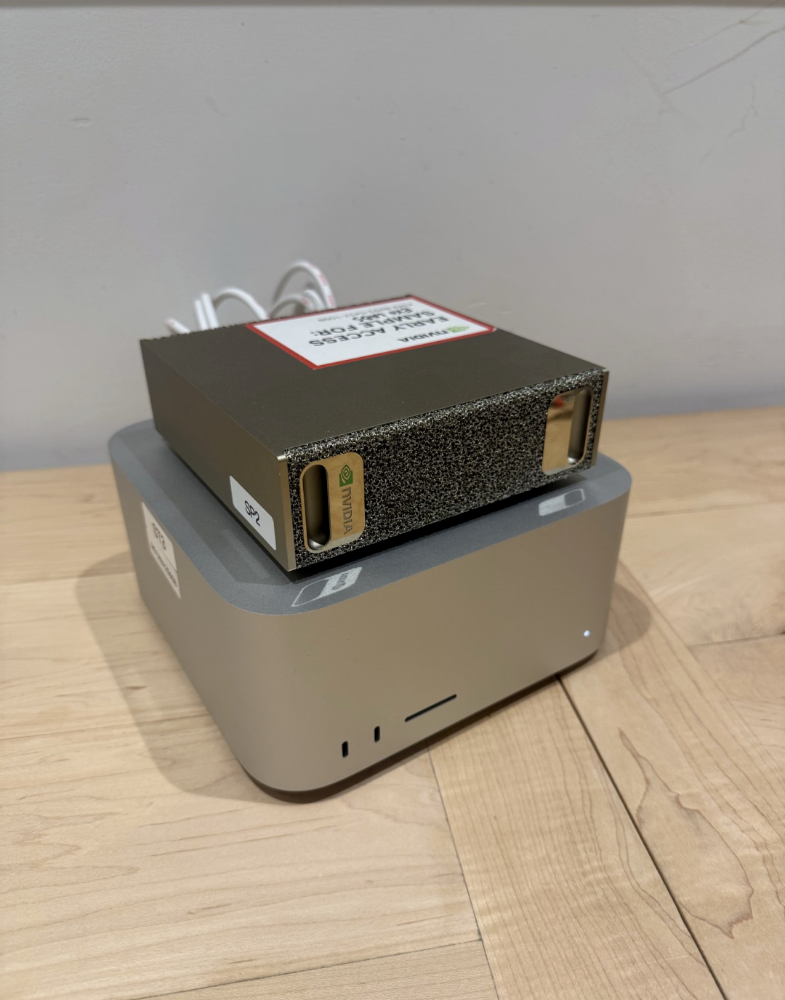
1970年代，计算机interface[ˈɪnərˌfeɪs] v. （使通过界面或接口）接合，连接；[计算机]使联系还是大型机构的专属工具，然后个人电脑出现了，然后互联网出现了。
测序仪是个人电脑，基因组基础模型是操作manipulate[məˈnɪpjəˌleɪt] v. 操纵，控制；(熟练地)使用，操作；(巧妙地)处理系统，Claude是用户界面。当这三层同时就绪，生物学的「个人计算compute[kəmˈpjut] v. 计算；估算；用计算机计算机时刻」就到了。
Seth在客厅里完成基因组测序的那个下午，可能likelihood[ˈlaɪkliˌhʊd] n. 可能性，可能就是这个时刻的第一帧画面。
十年后回头看，2026年大概是一个分水岭divide[dɪˈvaɪd] n. [地理] 分水岭，分水线。
这场实验的意义significance[sɪgˈnɪfɪkəns] n. 重要性; 意义远不止于一个技术宅的胜利。它标志着生物学研究正在经历一场从机构apparatus[ˌæpərˈætəs] n. 器械，器具，仪器；机构，组织垄断向个人DIY模式的范式转移。
当复杂的生物学操作被AI简化为语言对话，当昂贵的costly[ˈkɔstli] adj. 昂贵的；代价高的仪器变成人人可负担，普通人就能主动解析生命的底层逻辑。
正如Seth所说，他在摆弄基因回路时找到了小时knot[nɑt] n. （绳等的）结；节瘤，疙瘩；海里/小时（航速单位）候摆弄电脑的快感，这种「极客精神」正在开启一个新的时代。
接下来，AI还会创造coin[kɔɪn] v. 铸造（货币）；杜撰，创造多少奇迹？
参考资料feedback[ˈfidˌbæk] n. 反馈；成果，资料；回复：[iwantosequencemygenomeathome.com](https://iwantosequencemygenomeathome.com/) · [X / ReyJudgementOS](https://x.com/ReyJudgementOS/status/2046201536683061374)